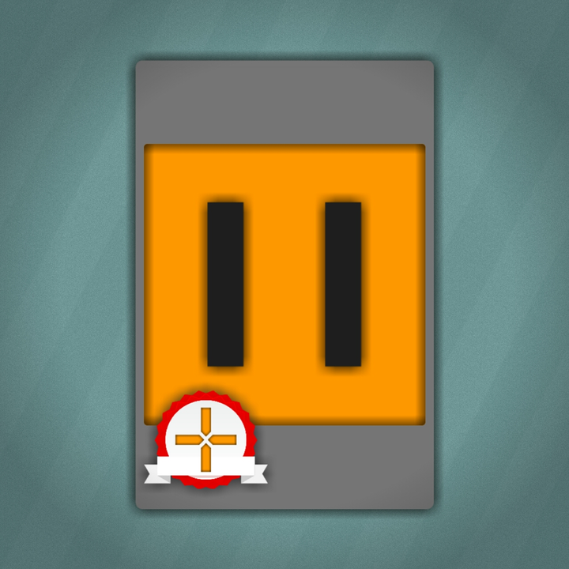

Добро пожаловать!
Что это такое? Fayout - компания по разработке игр в Scratch. Эта компания была основана в 2008 году, но начала работать на Scratch только в 2015г.
Наш состав. Наш состав на данный момент (с 15.07.2018) составляет 4 человека.
- NeonFactoryX
- Simon142
- RuMaks
- NNJunior
Что такое Loopy? В Fayout, Loopy это главный персонаж. У него оранжевое лицо и серый костюм. С черными глазами и медалью от Fayout.
| Аккаунты LoopyTM | | Связатся с нами |
|---|---|
| NeonFactoryX | neonfactoryx@gmail.com |
| RuMaks | |
| Simon142 | |
| NNJunior | |
| ilnik0806 |